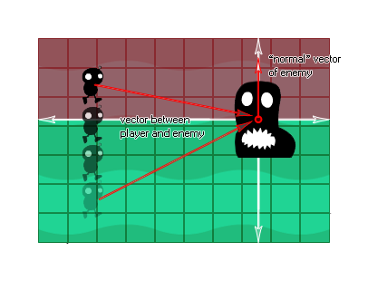

Syntaxe:
dot_product(x1, y1, x2, y2)
| Argument | La description |
|---|---|
| x1 | La coordonnée x du premier vecteur. |
| y1 | La coordonnée y du premier vecteur. |
| x2 | La coordonnée x du deuxième vecteur. |
| y2 | La coordonnée y du second vecteur. |
Retours: Real
La description
Le produit scalaire est une valeur exprimant la relation angulaire entre deux vecteurs et se trouve en prenant deux vecteurs, en les multipliant ensemble et en ajoutant ensuite les résultats. Le nom "produit scalaire" est dérivé du point centré "·" qui est souvent utilisé pour désigner cette opération (le nom alternatif "produit scalaire" met l'accent sur la nature scalaire plutôt que sur la nature vectorielle du résultat).
La formule mathématique réelle peut être écrite comme ceci: 
Ainsi, en 2D, le produit scalaire des vecteurs a [x1, y1] et b [x2,2] est x1x2 + y1y2, ce qui signifie que le dot_product de GameMaker Studio 2 est calculé comme GameMaker Studio 2:
a · b = (x1*x2)+(y1*y2);
La chose curieuse à propos du produit scalaire est la relation qu'il a avec l'angle formé par les vecteurs d'entrée qui peuvent être exprimés comme:
a · b = (length of a) * (length of b) * cos(angle)
C'est-à-dire que le produit scalaire de deux vecteurs sera égal au cosinus de l'angle entre ces vecteurs, multiplié par les longueurs de chacun d'eux. Voici une image pour illustrer: 
Il y a quelques choses que nous pouvons maintenant énoncer à partir de deux vecteurs quelconques en relation avec le résultat de leur produit scalaire:
- Si a et b sont perpendiculaires (à 90 degrés l'un de l'autre), le résultat du produit scalaire sera nul, car cos (ang) sera nul
- Si l'angle entre a et b est inférieur à 90 degrés, le produit scalaire sera positif (supérieur à zéro), car cos (ang) sera positif
- Si l'angle entre a et b est supérieur à 90 degrés, le produit scalaire sera négatif (inférieur à zéro), car cos (ang) sera négatif
Alors qu'est-ce que cela signifie pour ceux d'entre nous qui font des jeux? Bien, cette relation mathématique peut être utilisée dans un certain nombre de circonstances, mais la meilleure façon de le voir est de construire un scénario réel et de voir par vous-même ce qui se passe. L'un des moyens les plus simples de le faire est de générer un simple "ligne de visée" pour un ennemi, disons un jeu de plateforme, afin que l'ennemi "voie" le joueur s'il se trouve à 90 ° de chaque côté de son vecteur normal.

Fondamentalement, nous devons obtenir le vecteur normal de l'ennemi (c'est-à-dire: composé d'une direction et d'une distance de visibilité) et ensuite nous devons amener le vecteur du joueur à l'ennemi. Nous obtiendrons alors le dot_product de ces vecteurs, et si le résultat est positif, le joueur a été vu, et s'il est négatif, il ne l'a pas vu. Le code réel pour obtenir ce travail est fourni dans l'exemple ci-dessous.
Exemple:
var x1, y1, x2, y2;
x1 = lengthdir_x(1, image_angle);
y1 = lengthdir_y(1, image_angle);
x2 = o_Player.x - x;
y2 = o_Player.y - y;
if dot_product(x1, y1, x2, y2) > 0 seen=true else
seen=false;
Le code ci-dessus crée un vecteur en utilisant l'angle d'image des instances, puis récupère le vecteur de l'objet joueur "o_Player" sur lui-même. Enfin, il calcule le produit scalaire de ces deux vecteurs et s'il est supérieur à 0, il positionne la variable "seen" sur true, et s'il est égal ou inférieur à 0, il la définit sur "false".